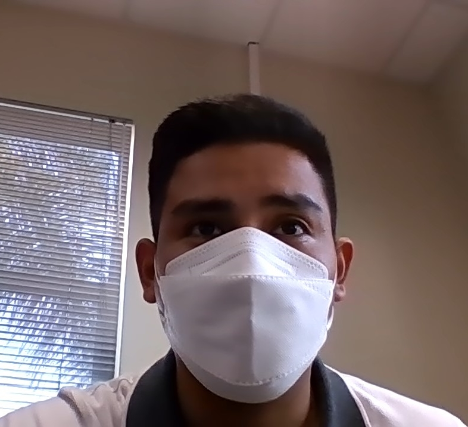
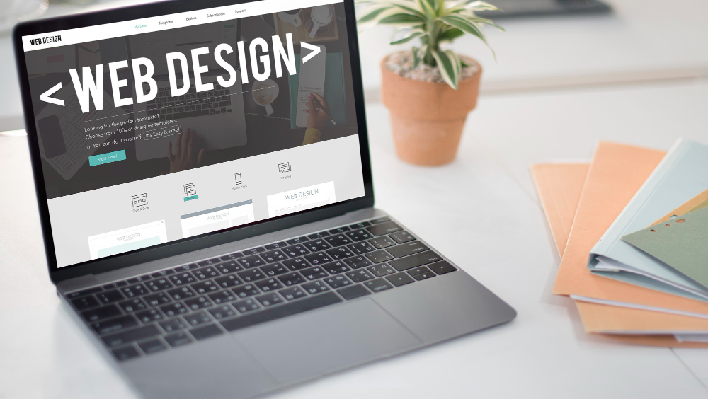
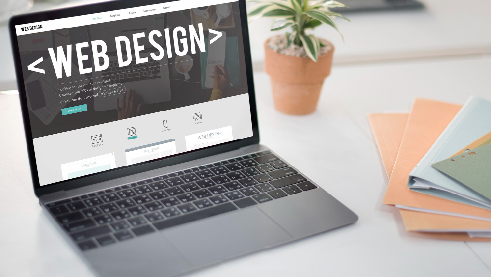

Freddy Aldair Muñoz Huasasquiche

Sobre mi
Soy Tecnico en Computacion e Informatica, trabajo actualmente como Asistente de Sistemas en una empresa agroexportadora de ICA, soy un entusiasta y conocedor de la tecnologia y el uso de las mismas. Tengo conocimiento en software y Hardware y me gusta el desarrollo web al cual quiero aprender nuevos lenguajes y especializarme como desarrollador web Full Stack.
Mi trabajo soñado
Me ha propuesto como meta especializarme como desarrollar Web Full Stack y trabajar en una empresa dedicada al desarrollo de interfaz y sistemas web, crecer profesional y economicamente en este rubro que me apasiona.
 
